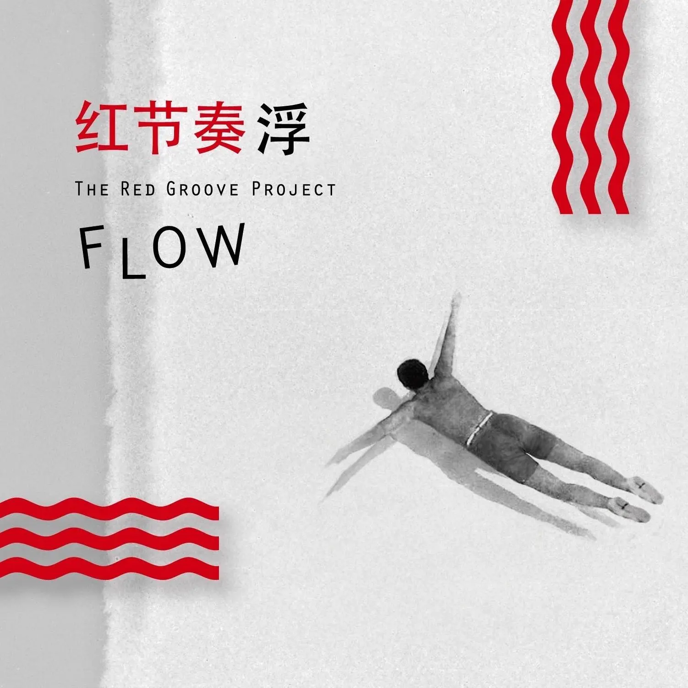

Album#20
FLOW 浮
{kind=link}

专辑信息
- 专辑名称：Flow 浮
- 歌手：顾忠山 / 红节奏 The Red Groove Project
- 年份：2014-10-08
- 风格：Jazz、Funk、Jazz fusion (爵士融合乐)
- 时长：约 75 分钟

这张专辑是在 余日摇滚 Day 73 翻到的，专辑封面我觉得蛮有趣的，禹安说有星际牛仔的感觉，我也蛮喜欢星际牛仔里的配乐的，所以就找来听了听。
整体来说，是一张律动和节奏明快的 Jazz 专辑，纯器乐演奏偏多，另外有 3 首带有演唱的曲目。我觉得蛮好听的，各种器乐1的演奏很让人享受，听着听着就会忍不住晃动身体或抖抖腿。
如果你想听点舒缓一些的 Jazz，可以听听 Album#13 - The Études，主要是以钢琴为主的 Jazz，也很好听。
专辑里的女声确实蛮有星际牛仔的感觉的。演唱的两个歌手，一个是顺子，一个是袁娅维 TIA RAY ，袁娅维的《T.I.A.》 也是一张我蛮喜欢的专辑，专辑里的《直接》是我最喜欢的一首。
TRACKLIST
仅包含有歌词的曲目。
Reason's Treason
by 顺子
Funny how dreams of love seem to fade, fade away 2
Tell me the reason feelings do change that-a-way
I thought I found the one to be near me always
But then you went away
Just as the others, plans seem to change, things turn grey
Began to feel crazy maybe it’s me, my mistake
Just can’t feel happy sadly in that normal way
Single destiny is the one for me
When I think of you, it really makes me blue
I’m trying trying harder harder just to move on
I want it to be through, but I guess I still love you
I’m trying trying harder harder just to move on
I know I love you, but what else can I do
Gonna quit the past and slowly make my way and move on
Ain’t no other way, there’s nothing else to say,
Cuz the words don’t mean a thing and no one’s listenin’
The lights in our eyes keep on dyin’
Our souls find a warm place to lie in
The fight leaves our minds, no denyin’
There’s no point in cryin’, we pick up where we leave
It’s over and done no more lyin’
A new day is on the horizon
The past is behind us we sigh and we all keep on tryin’
For the rest of time
Just as the dust our memories are swept, swept away
Am I the problem, is this the world that we face?
So many choices voices in life’s reeling pace
But I know I’ve lost this race
When I think of you, it really makes me blue
I’m trying trying harder harder just to move on
I want it to be through, but I guess I still love you
I’m trying trying harder harder just to move on
I know I love you, but what else can I do
Gonna quit the past and slowly make my way and move on
Ain’t no other way, there’s nothing else to say,
Cuz the words don’t mean a thing and no one’s listenin’
The lights in our eyes keep on dyin’
Our souls find a warm place to lie in
The fight leaves our minds, no denyin’
There’s no point in cryin’, we pick up where we leave
It’s over and done no more lyin’
A new day is on the horizon
The past is behind us we sigh and we all keep on tryin’
For the rest of time
On and on the drama lingers on
Spinning stories cryin’ out in song
So much misunderstanding
Cats and dogs need different things
I sucked you in can’t breathe you out
You took me in then kicked me out
I’m wonderin’ if I’d do the same again
To the same old end
Story’s all the same with different names
How much longer can I play this game?
Reasons why we lie come rolling in
Truth is paper thin
All is fair and that’s unfair I know
The pain is deep and moves too slow
And I wonder if ignorance is bliss
That’s the way it is
When I think of you, it really makes me blue
I’m trying trying harder harder just to move on
I want it to be through, but I guess I still love you
I’m trying trying harder harder just to move on
I know I still love you, but what else can I do
Gonna quit the past and slowly make my way and move on
Ain’t no other way, and nothing else to say,
Cuz the words don’t mean a thing and no one’s listenin’
The lights in our eyes keep on dyin’
Our souls find a warm place to lie in
The fight leaves our minds, no denyin’
There’s no point in cryin’, we pick up where we leave
It’s over and done no more lyin’
A new day is on the horizon
The past is behind us we sigh and we all keep on tryin’
For the rest of time
Yellow Fever
by 袁娅维
You walk through any door in town. 3
You look the whole place up and down.
You’re at that perfect age.
a beast out of its cage,
And the game is on.
Young and trim and confident.
Got your tight green jeans money well spent.
There’s a place around the bend
Where the party never ends
Gonna get some skin
Hearts in hand our souls on fire
A pretty pretense for desire
And when it comes down to denial
You look to what’s out there for hire
Doesn’t matter what is said
As long as it ends in the bed
And with tomorrow comes a new day
The past is wiped clean from your head
Oh on the low down low down
Yellow fever don’t slow down
Heaven is a place on earth,
When you know how much your money’s worth.
But the writing on the wall
Says a catch on down the hall
Is lingering.
One foot halfway down the grave
And your arm ‘round something half your age
She’s waiting on the will
You’re a walking dollar bill
That don’t matter none
Life is full of simple pleasures
You roam the streets for hidden treasures
No restraints you’re on your own
You left the wife and kids back home
Alpha male, got the pick of the den
It’s sweeter than it’s ever been
But watch yourself one day you’ll wake
To the sound of wedding bells again
Oh on the low down low down
Yellow fever don’t slow down
Hearts in hand our souls on fire
A pretty pretense for desire
And when it comes down to denial
You look to what’s out there for hire
Doesn’t matter what is said
As long as it ends in the bed
And with tomorrow comes a new day
The past is wiped clean from your head
Life is full of simple pleasures
You roam the streets for hidden treasures
No restraints you’re on your own
You left the wife and kids back home
Alpha male, got the pick of the den
It’s sweeter than it’s ever been
But watch yourself one day you’ll wake
To the sound of wedding bells again
Oh on the low down low down
Yellow fever don’t slow down
You know our love is only as deep as your pockets
That don’t stop it
And I know my beauty’s only skin deep and as time goes on
Eyes will wander on
You know our love is only as deep as your pockets
That don’t stop it
And I know my beauty’s only skin deep and as time goes on
Eyes will wander on
Oh-ah on the low down low down
Yellow fever don’t slow down
Three Doors, Three Keys
by 顺子
Time is a wishing well 4
Full of empty promise
Our dreams turn cold
Soon we don't dream at all
Then tomorrow's gone
And when night begins to fall
We rage against the dawn
It reads like an empty page
Of a book with no moral
And the end is known
Ain't no suspense at all
We come and then we go
So far away
Time stretched out before us
The night brings the day
Time's a moving train we can't escape
Getting faster on by the day
And the choices we
Make we cannot change
We just carry on
So far away
Time stretched out before us
The night brings the day
And on and on and on
We're young and unafraid
And touched by the heavens
But as we look away
Take me away
From this troubled age
Or show me some peace
From my childhood days
The doors to my mind are locked safe away
With memories of hope
Pain and grief and shame
脚注:
- 吉他： Lawrence Ku 顾忠山
- 小号： 胡丹峰与Toby Mak
- 次中音萨克斯： Alec Haavik
- 长号：胡清文
- 键盘：Sean Higgins
- 贝斯：E.J. Parker
- 鼓： Chirs Trzcinski、Nicholas Mcbride
- 打击乐：Leonardo Susi
- 演唱：顺子、袁娅维
歌词翻译自 LLM。
可笑爱情梦想似乎渐渐褪色，消逝
告诉我为何感情会那样变化
我以为我找到了那个永远陪伴我的人
但你却离开了
就像其他人一样，计划似乎改变，一切都变成灰色
开始觉得疯狂也许是我，我的错
可悲地无法以那种正常的方式感到快乐
单身命运属于我
当我想起你，真的让我忧郁
我努力努力更加努力只为继续前行
我想要结束，但我想我还爱着你
我努力努力更加努力只为继续前行
我知道我爱你，但我还能做什么
要放下过去，慢慢走自己的路继续前行
别无他法，无话可说，
因为言语毫无意义，没人在听
我们眼中的光芒不断熄灭
我们的灵魂找到一个温暖的地方栖息
争斗从心中消失，无可否认
哭泣没有意义，我们从离开的地方重新开始
一切都结束了，不再说谎
新的一天即将到来
过去已抛在身后，我们叹息，我们继续努力
永远
就像尘土，我们的回忆被扫去，扫去
是我的问题吗，还是我们面对的世界？
生活的快节奏中有太多选择的声音
但我知道我输掉了这场比赛
当我想起你，真的让我忧郁
我努力努力更加努力只为继续前行
我想要结束，但我想我还爱着你
我努力努力更加努力只为继续前行
我知道我爱你，但我还能做什么
要放下过去，慢慢走自己的路继续前行
别无他法，无话可说，
因为言语毫无意义，没人在听
我们眼中的光芒不断熄灭
我们的灵魂找到一个温暖的地方栖息
争斗从心中消失，无可否认
哭泣没有意义，我们从离开的地方重新开始
一切都结束了，不再说谎
新的一天即将到来
过去已抛在身后，我们叹息，我们继续努力
永远
戏剧般的情节不断持续
旋转的故事在歌中哭泣
如此多的误解
你我需求不同
我吸入了你，却无法呼出
你接纳了我，又将我踢开
我在想我是否会再次做同样的事
走向同样的结局
故事都一样，只是名字不同
我还能玩这个游戏多久？
我们撒谎的理由滚滚而来
真相薄如纸
一切都是公平的，而这不公平，我知道
痛苦很深，消退得太慢
我想知道无知是否是福
这就是现实
当我想起你，真的让我忧郁
我努力努力更加努力只为继续前行
我想要结束，但我想我还爱着你
我努力努力更加努力只为继续前行
我知道我还爱着你，但我还能怎样
要告别过去，慢慢开辟自己的路继续前行
别无选择，无话可说，
因为言语毫无意义，没人在听
我们眼中的光芒不断熄灭
我们的灵魂找到一个温暖的地方栖息
争斗从心中消失，无可否认
哭泣没有意义，我们从离开的地方重新开始
一切都结束了，不再说谎
新的一天即将到来
过去已抛在身后，我们叹息，我们继续努力
永远
任意穿梭于舞池酒巷
将形形色色反复打量
你风华正茂
一如笼中猛兽
猫鼠游戏才正开始呢
风度翩翩自信昂扬
花钱如流水也不在乎
有一个地方彻夜狂欢
那儿的 party 永不散
你也想去碰碰运气
彼此互换真心 灵魂早已炽热
欲望在美丽的掩饰下疯狂
她装模作样的拒绝
你倒好奇她怎么自圆其说
你才不管别人的流言蜚语呢
只要最后能翻云覆雨
又是新的一天
对你而言昨天已是过眼云烟
oh 真是这样吗
你内心的火热欲望不知驻足 喷涌薄发
人间有个地方叫天堂
钱进钱出好不快活
冥冥之中有声音在说
这场游戏还在继续
会以捕获你而告终
仅半步之遥便堕入欲望之都
你一把抓住年轻的游丝
她沉思着等待
你却醉生梦死
你不在乎 无所谓
生活充满了简单的快乐
而你漫步于街头，找寻隐藏的宝藏
你行你素 无所畏惧
弃妻儿于身后不顾
开天辟地之人，才能得到理想方圆
那才是美事啊
静观己身，听着婚礼的钟声
有一天你终会醒悟
oh 请放宽心认清自己
可内心欲望蹄疾向前
彼此互换真心 灵魂早已炽热
欲望妖娆地舞动
她装模作样的拒绝
你听着她说下去 饶有兴趣
你才不管别人的流言蜚语呢
只要最后能翻云覆雨
新的一天 多么惬意
昨天早已抛之脑后
生活充满了简单的快乐
你却漫步于街头，找寻隐藏的宝藏
你行你素 无所畏惧
弃妻儿于身后而不顾
真正的勇者，才能如愿以偿
那才是最好的美事啊
静观己身，听着婚礼的钟声
有一天你终会醒悟
静下心沉住气就可以了吗
你内心的火热欲望 喷涌薄发
你知道的 我们的爱虽浅如口袋
双方仍奋不顾身
我也知道 时光飞逝 我的美貌薄如蝉翼
双眼仍将你留恋
你知道的 我们的爱虽浅如口袋
你我仍奋不顾身
我也知道 时光飞逝 我的美貌薄如蝉翼
双眼仍将你留恋
我又有什么办法
对你的痴迷使我害了病 越陷越深
时光是口许愿井
盛满空洞的承诺
梦想渐冷
终至不再做梦
明日转瞬即逝
当夜幕开始低垂
我们怒斥黎明
如同空白书页
写满无意义的寓言
结局早已注定
毫无悬念可言
我们来去匆匆
渐行渐远
时光在眼前延展
黑夜孕育白昼
时光是逃不脱的列车
日复一日加速飞驰
那些抉择
一旦铸就便无法更改
我们唯有前行
渐行渐远
时光在眼前延展
黑夜孕育白昼
循环往复
我们年少无畏
被天堂亲吻
却在转瞬间错失
带我离开
这纷扰年代
或让我重温
童年那份安宁
心门紧锁
封存着希望记忆
痛苦悲伤与羞耻